UDN
Search public documentation:
MaterialsCompendiumCH
English Translation
日本語訳
한국어
Interested in the Unreal Engine?
Visit the Unreal Technology site.
Looking for jobs and company info?
Check out the Epic games site.
Questions about support via UDN?
Contact the UDN Staff
日本語訳
한국어
Interested in the Unreal Engine?
Visit the Unreal Technology site.
Looking for jobs and company info?
Check out the Epic games site.
Questions about support via UDN?
Contact the UDN Staff
材质概要
- 材质概要
- 概述
- 参数
- 当创建材质时如何考虑颜色
- 材质表达式
- Abs(求绝对值)
- 添加
- AntialiasedTextureMask
- AppendVector(向量合并)
- BumpOffset(凸凹偏移)
- CameraVector（相机位置向量）
- CameraWorldPosition（相机的世界位置）
- Ceil(值上限取整)
- Clamp(区间值限定)
- ComponentMask(分量蒙板)
- Constant(常量)
- Constant2Vector(二维常数向量)
- Constant3Vector(三维常数向量)
- Constant4Vector(四维常数向量)
- ConstantBiasScale(常数偏移比例)
- ConstantClamp(常数区间)
- Cosine(余弦)
- CrossProduct(叉积)
- Custom(自定义)
- CustomTexture(自定义贴图)
- DepthBiasBlend(深度偏移混合)
- DepthBiasAlpha(深度偏移Alpha)
- DepthBiasedBlend(深度偏移混合)
- DeriveNormalZ(计算法线向量Z)
- Desaturation(冲淡颜色)
- DestColor(目标色)
- DestDepth(目标深度)
- Distance(距离)
- Divide(除法)
- DotProduct(点积)
- DynamicParameter(动态参数)
- FlipBookSample(翻书采样)
- Floor(值下限取整)
- FluidNormal
- FMod
- FoliageNormalizedRotationAxisAndAngle
- FoliageImpulseDirection(植被冲力的方向)
- FontSampler(字体取样器)
- Frac(取小数值)
- Fresnel(菲涅尔)
- FunctionInput
- FunctionOutput
- If
- LensFlareIntensity(镜头眩光亮度)
- LensFlareOcclusion(镜头眩光遮挡)
- LensFlareRadialDistance(镜头眩光半径距离)
- LensFlareRayDistance(镜头眩光光线距离)
- LensFlareSourceDistance(镜头眩光源距离)
- LightmapUV（光照贴图 UV）
- LightmassReplace（Lightmass 替换）
- LightVector(光照向量)
- LinearInterpolate(线性插值)
- MaterialFunctionCall
- MeshEmitterDynamicParameter
- MeshEmitterVertexColor(网格物体发射器顶点颜色)
- MeshSubUV(网格物体子UV)
- MeshSubUVBlend
- Multiply(乘法)
- Normalize(单位化)
- ObjectOrientation（物体朝向）
- ObjectRadius(物体半径)
- ObjectWorldPosition(物体在世界空间中的位置)
- OcclusionPercentage（遮挡百分比）
- OneMinus(一减去)
- Panner(平移器)
- ParticleMacroUV(粒子的巨大UV)
- ParticleSubUV(粒子子 UV)
- PerInstanceRandom
- PixelDepth(像素深度)
- Power(求幂值)
- ReflectionVector(反射向量)
- Rotator(旋转器)
- RotateAboutAxis(围绕坐标轴旋转)
- ScalarParameter(标量参数)
- SceneDepth(场景深度)
- SceneTexture(场景贴图)
- ScreenPosition(屏幕位置)
- Sine(正弦)
- SphereMask（球形蒙板）
- SquareRoot(平方根)
- 挖空
- StaticBool
- StaticBoolParameter
- StaticComponentMaskParameter(静态分量蒙板参数)
- StaticSwitchParameter（静态开关参数）
- StaticSwitch
- TextureCoordinate(贴图坐标)
- TextureSample(贴图样本)
- TextureSampleParameter2D(贴图样本参数：2D)
- TextureSampleParameterCube(贴图样本参数:立方体)
- TextureObject
- TextureObjectParameter（贴图对象参数）
- TextureSampleParameterMeshSubUV（贴图样本参数网格物体子 UV）
- TextureSampleParameterMeshSubUVBlend（贴图样本参数网格物体子 UV 混合）
- TextureSampleParameterMovie(贴图样本参数：影片)
- TextureSampleParameterNormal（贴图样本参数：法线）
- TextureSampleParameterSubUV（贴图样本参数：子 UV）
- Time(时间)
- Transform(变换)
- TransformPosition(变换位置)
- TwoSidedSign（双面符号）
- WorldPosition(世界位置)
- WorldNormal(世界法线)
- VectorParameter(向量参数)
- VertexColor(顶点颜色)
- WindDirectionAndSpeed(风的方向和速度)
概述
参数
当创建材质时如何考虑颜色
材质表达式

- Description - 所有材质表达式都有一个通用的 Desc（描述） 属性。在这个属性中输入的文本将会在工作区内的表达式上方的材质编辑器里面显示。可以出于任何目的使用它，但是通常最好对使用意图或表达式的函数进行简短说明。
- Title bar - 可以显示名称和/或有关材质表达式的属性的相关信息。
- Outputs - 连接输出材质表达式操作的结果。
- Preview - 可以显示材质表达式输出的值的预览。在启动实时更新的情况下自动进行更新。可以使用 Spacebar（空格键）进行手动更新。
- Inputs - 连接选取要供材质表达式使用的值。
Abs(求绝对值)
Abs 是数学术语“绝对值”的缩写。 Abs 表达式可以输出这个绝对值，或者它接收到的输出端的不带符号的值。基本上，这就意味着它会通过去掉减号将负数变为正数，而正数和零保持不变。 示例： -0.7 的绝对值是 0.7； -1.0 的绝对值是 1.0；1.0 的绝对值是 1.0 示例使用： 求绝对值运算通常与点积结合使用。 点积的范围是从 -1..0..1，点积的绝对值的范围是 1..0..1。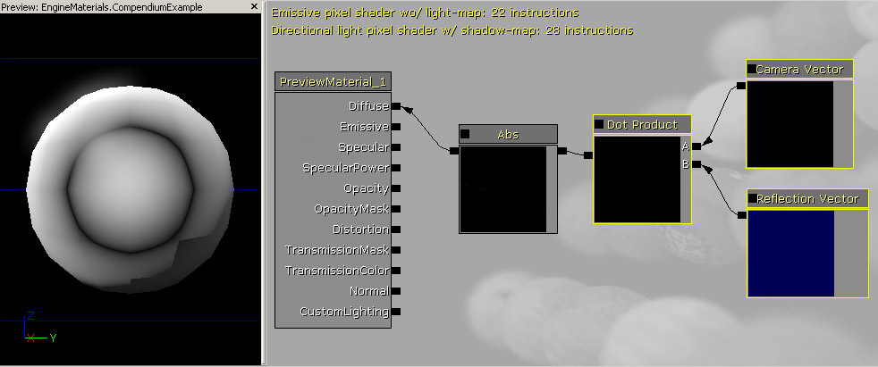
添加
Add（加法）表达式会选取两个输入，将它们相加，然后输出这个结果。 这个加操作基于每个通道进行执行，也就是说输入端' R 通道要被加进去，G 通道要被加进去，B 通道加进去等等。这两个输入必须有相同数量的通道，除非它们其中有一个是单独的常量值。可以将常量与一个具有任意个输入的向量相加。 输入- A - 选取要进行加法运算的值。
- B - 选取被加数。
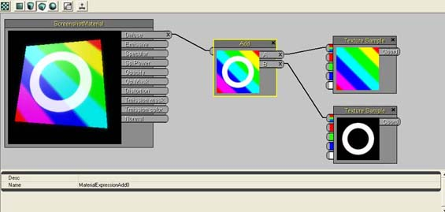
AntialiasedTextureMask
AntialiasedTextureMask 表达式允许您使用一个软（抗锯齿）过渡蒙板创建材质。可以使用蒙板在两个复杂的材质属性之间混合，或者淡出一个 alpha 混合的材质（使用 SoftMasked 可以正常工作）。只需指定已经在一个通道（红、绿、蓝或 alpha）中指定蒙板的贴图，在表达式中设置使用的通道，然后指定比较值。假设通道可以在 0=黑色到 1=白色的范围内存储灰度值，比较函数可以定义最终蒙板应该是 0 还是 1。这个表达式是一个参数，允许 Texture（贴图） 属性被子项 MaterialInstance 覆盖。 属性- Threshold - 指定在像素覆盖中作为截断点使用的值。像素覆盖值小于这个值将会变黑；大于这个值的话将会变白。
- Channel - 可以指定要作为蒙板使用的贴图的通道。
- Texture - 指定要使用的蒙板贴图。
- UVs - 选取要应用到贴图蒙板上的贴图坐标。
Result = 1 if TextureLookup < Threshold then Result = 0实际的执行函数稍微有点复杂，因为它会尝试根据实际像素覆盖返回 0 和 1 之间的值来避免出现锯齿现象。 示例（这个 128x128 的小贴图，为了保证质量最好未进行压缩）： https://udn.epicgames.com/pub/Three/MaterialsCompendiumCH/ULogoLowBlurred.bmp 作为一个法线贴图（左上角），与描述的材质表达式（右下角）结合使用：
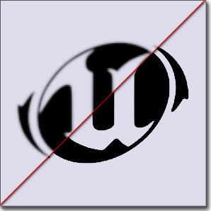
这项技术在放大以及与模糊的输入内容结合使用的时候非常有效。压缩会大大影响质量，所以尝试使用未压缩的低分辨率贴图。 请参阅使用抗锯齿改进 Alpha 测试了解执行过程详细信息。
请参阅使用抗锯齿改进 Alpha 测试了解执行过程详细信息。
AppendVector(向量合并)
AppendVector 允许您把通道结合在一起来创建一个比原始向量具有更多通道的向量。 例如，您可以取两个单独的常量值，然后可以将它们合并生成一个具有两个通道 Constant2Vector(二维常量向量) 值。它可以用于记录单独贴图中的通道，或者将多个灰度贴图合并为一个 RGB 颜色贴图。 输入- A - 选取要进行合并运算的值。
- B - 选取被合并的值。
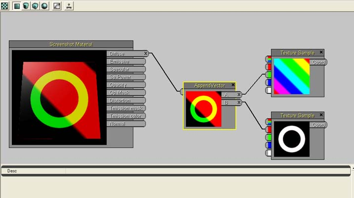

BumpOffset(凸凹偏移)
BumpOffset 是虚幻引擎 3 的一个术语，它对应着通常所熟知的'parallax mapping(位移贴图)'。 BumpOffset(凸凹偏移)表达式在不需要增加额外几何体的情况下便可以产生深度错觉。 BumpOffset(凸凹偏移)材质使用一个灰度 heightmap(高度贴图) 来给出深度信息。 高度贴图中越亮的值，在材质中的凸凹越明显；这些区域在相机移动过表面时将会产生位移（变换）。 在高度贴图中越黑的地方是越远，并且产生的位移越小。 属性- HeightRatio - 从 高度贴图 中选取的深度的乘数。 这个值越大，深度变化越极端。 一般这个值的范围是 .02 到 0.1。
- ReferencePlane - 指出了要应用效果的贴图空间的大致高度。 值0将会使得贴图变形得完全脱离表面，而值 0.5（默认值）意味着表面的某些地方将凸起某些地方将凹陷。
- Coordinate - 允许基础坐标通过表达式进行修改。
- Height - 允许将贴图（或一个值）作为高度贴图使用。
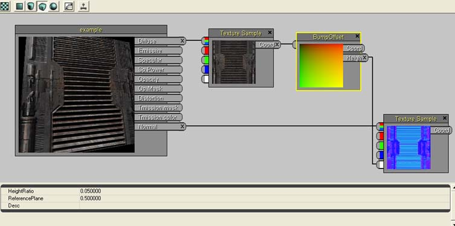
CameraVector（相机位置向量）
CameraVector（相机位置向量）表达式输出是一个具有 3 个通道的值，代表着相机相对于表面的方向，换句话说，就是说由像素到相机的方向。 实例应用： CameraVector（相机位置向量）通常用于伪造环境贴图。可以通过把 CameraVector（相机位置向量）和 ComponentMask（分量蒙板）相连接，并使用 CameraVector（相机位置向量）的 X 和 Y 通道作为贴图坐标来实现。 (鼠标悬停在图片上查看动画效果)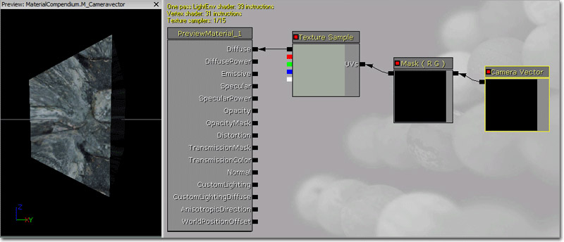
CameraWorldPosition（相机的世界位置）
CameraWorldPosition 表达式输出是一个具有三个通道的向量值，这个值代表的是世界空间中的相机位置。 预览球体随着相机旋转改变颜色。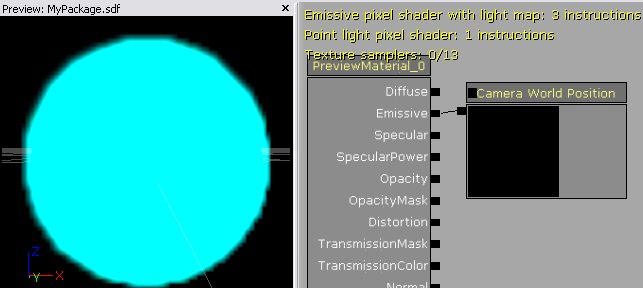
Ceil(值上限取整)
Ceil 表达式会选取值，然后将它们 向上 近似为下一个整数，然后输出这个结果。 还可以参阅Floor(值下限取整)和Frac(取小数值)。 示例： 0.2 的向上取整值为 1.0；(0.2,1.6) 的向上取整值为 (1.0,2.0)。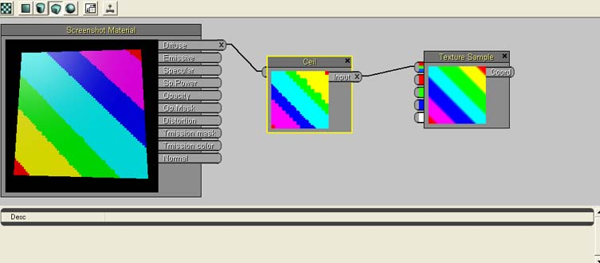
Clamp(区间值限定)
Clamp(区间值限定)表达式可以选取值并将它们限制在一个指定的范围内，该范围由一个最小值 (Min) 和最大值 (Max) 定义。 最小值 0.0 和最大值 0.5 意味着最后的结果将永远不会小于 0.0，也永远不会大于 0.5。 输入- Min - 在限定范围的时候选取这个值作为最小值。
- Min - 在限定范围的时候选取这个值作为最大值。
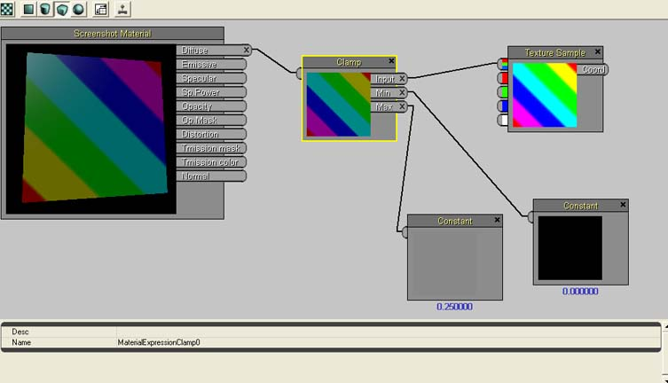
ComponentMask(分量蒙板)
ComponentMask 表达式允许您从输入中选择通道 (R、G、B 和/或 A) 的特定子集传递给输出。尝试传递一个在输入中不存在的通道将会引发错误，除非这个输入是一个单独的常量值。在这种情况下，将单独的值传递给每个通道。当前选择要传递的通道显示在表达式的标题栏中。 属性- R - 如果勾选该项，输入值的红色或者第一个通道将会被传递到输出。
- G - 如果勾选该项，输入值的绿色或者第二个通道将会被传递到输出。
- B - 如果勾选该项，输入值的蓝色或者第三个通道将会被传递到输出。
- A - 如果勾选该项，输入值的 alpha 或者第四个通道将会被传递到输出。
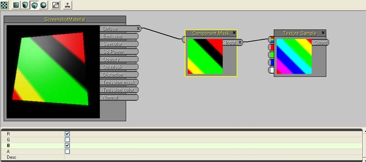
Constant(常量)
Constant 表达式会输出一个单独的浮点值。它是最常用的表达式之一，可以将其连接到任意输入端，不需要考虑输入预计的通道数。 属性- R - 指定表达式输出的浮点值。
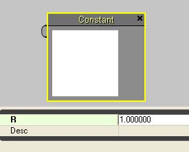
Constant2Vector(二维常数向量)
Constant2Vector 表达式可以输出一个具有两个通道的向量值，换句话说，也可以是两个常量值。 属性- R - 制定表达式输出的向量的红色或第一个通道的浮点值。
- G - 指定表达式输出的向量的绿色或第二个通道的浮点值。
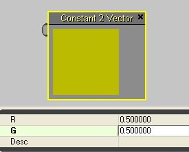
Constant3Vector(三维常数向量)
Constant3Vector 表达式可以输出一个具有三个通道的向量值，换句话说，也可以是三个常量值。 一个 RGB 颜色可以被认为是一个 Constant3Vector(三维常数向量)，在该向量上每个通道被分配一个颜色(红、绿、蓝)。 属性- R - 制定表达式输出的向量的红色或第一个通道的浮点值。
- G - 指定表达式输出的向量的绿色或第二个通道的浮点值。
- B - 指定表达式输出的向量的蓝色或第三个通道的浮点值。
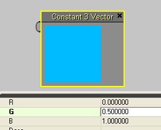
Constant4Vector(四维常数向量)
Constant4Vector 表达式可以输出一个具有四个通道的向量值，换句话说，也可以是四个常量值。 一个 RGBA 颜色可以被认为是一个 Constant4Vector(四维常数向量)，在那里每个通道被分配一个颜色(红、绿、蓝、alpha)。 属性- R - 制定表达式输出的向量的红色或第一个通道的浮点值。
- G - 指定表达式输出的向量的绿色或第二个通道的浮点值。
- B - 指定表达式输出的向量的蓝色或第三个通道的浮点值。
- A - 指定表达式输出的向量的 alpha 或第四个通道的浮点值。
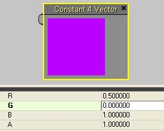
ConstantBiasScale(常数偏移比例)
ConstantBiasScale 表达式选取一个输入值，将一个偏移值累加给它，然后乘以一个可以输出这个结果的缩放系数。 举个例子，要将输入数据从 [-1,1] 转换为 [0,1]，您将要使用一个为 1.0 的偏移和一个 0.5 缩放系数。 属性- Bias - 指定要被累加到输入上的值。
- Scale - 指定偏移结果的乘数。

ConstantClamp(常数区间)
ConstantClamp 表达式与 Clamp 执行功能相同，但是它使用在节点本身包含的固定的输入来进行简单方便的应用。当您最大和最小区间值（比如把一个输入值在 0 到 1 区间范围内进行限定）不需要随时间变化时，这个表达式非常有用的。 属性- Min - 指定在限定范围的时候作为最小值使用的值。
- Max - 指定在限定范围的时候作为最大值使用的值。

Cosine(余弦)
Cosine 表达式可以输出输入值（以弧度为单位）的余弦函数。最普遍的是，通过将一个 Time 表达式连接到它的输入端可以输出一个连续震荡的波形。输出值将在 -1 和 1 之间来回循环。这个波的视觉表现如下所示：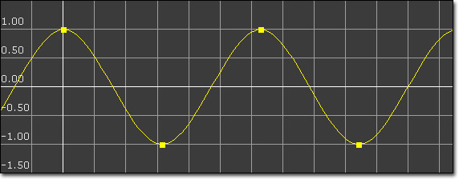
属性- Period - 指定合成波的周期。换句话说，这就是发生一次震荡的时间长度。
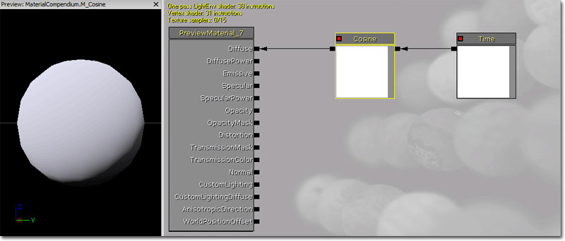
CrossProduct(叉积)
CrossProduct(叉积)表达式可以计算两个输入的具有三个通道的向量值的叉积，然后输出最终的具有三个通道的向量值。假设��间中有两条线（或者向量），叉积是一条与这两个输入向量互相垂直的线（或向量）。 输入- A - 选取一个三维向量值。
- B - 选取一个三维向量值。
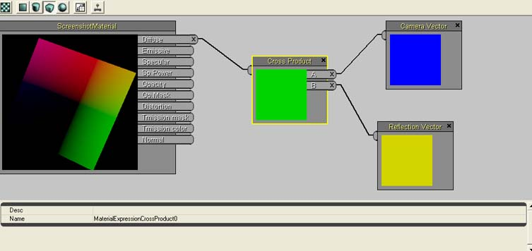
Custom(自定义)
Custom 表达式允许您编写在任意数量输入上操作并输出操作结果的自定义 HLSL 着色器代码。 警告！使用自定义节点将阻止常数合并，并且可能会比具有等同版本功能的内置点使用的指令要多很多！ Constant folding(常数合并)是UE3所采用的一种优化处理，它是通过在需要时降低着色器指令的数量来实现。 比如，表达式链'Time->Sin->Mul 和参数parameter(参数)相乘然后再和某数相加'，UE3将会把它压缩为一个单独指令，最终的加法。这是可能的，因为那个表达式所有的输入(Time(时间)、parameter(参数))对于整个调用函数来说是常数，它们不基于每一个像素改变。 UE3 不能在 custom(自定义)节点中压缩任何东西，那样将会产生比现有节点的等同版本产生更加低效的着色器。所以，最好只有在现有节点不能提供您所需要的功能时才使用自定义节点。 另一个警告：对于目标平台来说，在自定义节点中所书写的着色器代码是以‘按原样’的方式来编译的。 这意味着如果着色器是为 PC 平台编译的，它被假定为有效的 HLSL。如果为 PS3 平台编译，它将被假定为有效地 Cg。 属性- Code - 包含表达式将会执行的 HLSL 代码。
- Output Type - 指定由表达式输出的值的类型。
- Description - 指定要在材质编辑器中的表达式的标题栏中显示的文本。
- Inputs - 供表达式使用的输入数列。
- Input Name - 指定输入的名称。这个名字将会显示在材质编辑器中的表达式上，同时会在 HLSL 代码中使用这个名字引用输入值。
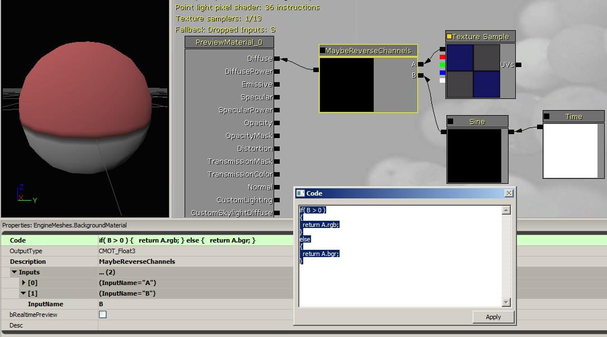
CustomTexture(自定义贴图)
CustomTexture(自定义贴图)表达式允许您指向来自 Custom(自定义)节点内部的 HLSL 代码的贴图，一般用于在 HLSL 中对其进行采样。 使用正常的 TextureSample(贴图样本)作为 Custom(自定义)节点的输入是可以的，但是在那种情况下，样本在Custom(自定义)节点的外面进行计算，结果被作为一个 4 为的浮点数值传入。当您想在一个循环中对同一个贴图进行多次采样或者当您想使用其它的采样指令例如ex2Dbias, tex2Dlod, tex2Dproj（要获得关于这些的说明请查看 HLSL文档）时，这个方法便不是非常的灵活。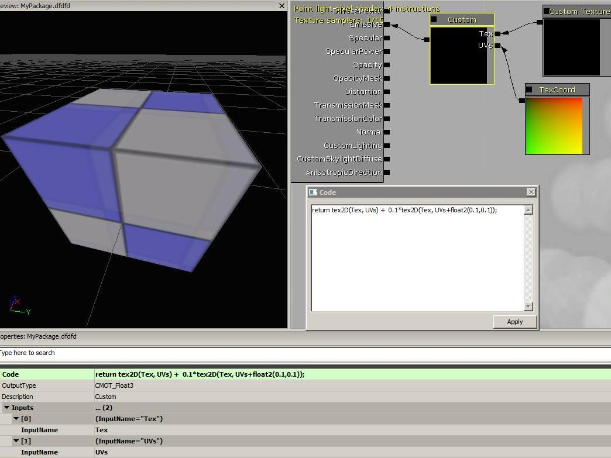
DepthBiasBlend(深度偏移混合)
DepthBiasBlend(深度偏移混合)表达式通常用于平面粒子的材质中，来删除平面粒子和其它的几何体相交时产生的尖锐边缘。 深度偏移混合比较源像素和目标像素的深度差异，并使用一个偏移量来决定在描画时要使用的 alpha 值。 请查看深度偏移混合应用页面获得更多信息。 DepthBiasBlend(深度偏移混合)表达式和其它的深度偏移混合节点相比速度比较慢而且也不那么的灵活；请使用深度偏移Alpha作为替换。 程序员： DepthBiasBlend(深度偏移混合)是深度偏移混合节点中最不应该作为首选的节点。因为 1)它从最近的 帧/深度缓存 中进行颜色和深度采样，处理速度很慢；2)混合是在着色器代码中执行的而不是通过硬件，混合速度很慢；3) DepthBiasBlend(深度偏移混合)的输入是通过贴图属性输入的而不是任意表达式的输入端。DepthBiasAlpha(深度偏移Alpha)
DepthBiasAlpha 表达式通常用于平面粒子的材质中，来删除平面粒子和其它的几何体相交时产生的尖锐边缘。 深度偏移混合比较源像素和目标像素的深度差异，并使用一个偏移量来决定在描画时要使用的 alpha 值。 请查看深度偏移混合应用页面获得更多信息。 DepthBiasAlpha 表达式是进行深度偏移混合时的首选节点。 编程人员： DepthBiasAlpha(深度偏移Alpha)是进行深度偏移混合的首选方法，因为混合在硬件中执行而不是在着色器中执行。
编程人员： DepthBiasAlpha(深度偏移Alpha)是进行深度偏移混合的首选方法，因为混合在硬件中执行而不是在着色器中执行。
DepthBiasedBlend(深度偏移混合)
DepthBiasedBlend 表达式通常用于平面粒子的材质中，来删除平面粒子和其它的几何体相交时产生的尖锐边缘。 深度偏移混合比较源像素和目标像素的深度差异，并使用一个偏移量来决定在描画时要使用的 alpha 值。 请查看深度偏移混合应用页面获得更多信息。 DepthBiasedBlend(深度偏移混合)表达式比DepthBiasAlpha(深度偏移Alpha)的速度慢；所以使用 DepthBiasAlpha(深度偏移Alpha)作为替换。 编程人员： DepthBiasedBlend(深度偏移混合)是深度偏移混合节点中最不应该作为首选地节点之一。因为1)它从最近的 帧/深度缓存 中进行颜色和深度采样，处理速度很慢；2)混合是在着色器代码中执行的而不是通过硬件，混合速度很慢。DeriveNormalZ(计算法线向量Z)
DeriveNormalZ 表达式可以得到一个切线空间法线的 Z 分量，X 和 Y 分量已经给出，然后输出最终的三维切线空间法线。Z 按照 Z = sqrt(1 - (x * x + y * y)) 进行计算。 输入- InXY - 以二维向量值的形式选取切线空间法线的 X 和 Y 分量。
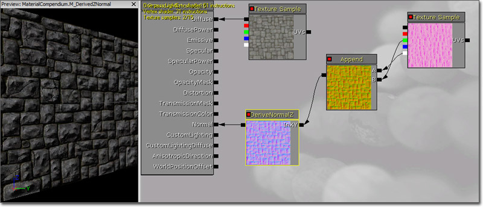
Desaturation(冲淡颜色)
Desaturation 表达式可以冲淡它的输入的颜色，或将输入的颜色转换为灰色调，基于特定的百分比。 属性- Luminance Factors - 指定每个通道可以帮助冲淡颜色的量。这样可以在冲淡的时候进行控制使绿色比红色亮，红色比蓝色亮。
- Percent - 指定应用到输入上冲淡颜色的量。Percent(百分比)的范围可以从 0.0（完全地不饱和）到 1.0（完全的原始颜色，没有颜色冲淡）。
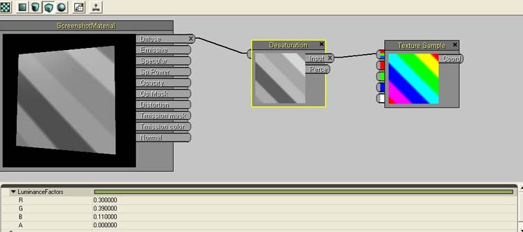
编程人员： 定义不饱和颜色D，输入颜色I和亮度因素L，输出将是O = (1-Percent)*(D.dot(I)) + Percent*IDestColor(目标色)
DestColor 表达式会在当前描画像素的后面输出渲染场景的现有颜色的当前状态。 实例应用： 一个水材质可以使用 DestColor(目标色)来对水下面的岩石的颜色进行采样。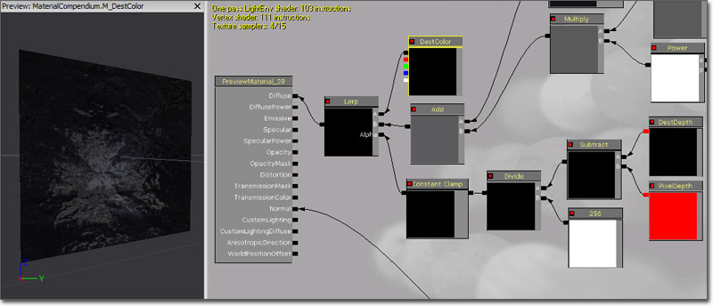
DestDepth(目标深度)
DestDepth 表达式会在当前描画像素的后面输出渲染场景的现有深度的当前状态。 实例应用： 水材质可以使用 DestDepth(目标深度)来赋予水一定的 "thickness(厚度)" 或雾颜色，水的深度越深（深度越大），水会使它下面的岩石变得越模糊。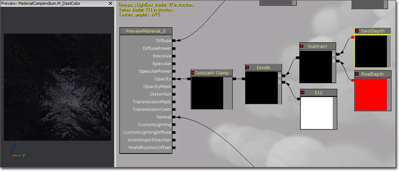
编程人员： DestDepth(目标深度)返回一个粗略的深度值（0 到 2^24-1 之间的整数）。 这个非倾斜化的深度可以根据以下进行法线化：MaxZ = 16777215 NormalizedDepth = 1 - MaxZ / (DestDepth + MaxZ)最终的单位化后的深度是 0.0 到 1.0 范围内的线性值。
Distance(距离)
Distance 表达式可以计算两个点/颜色/位置/向量之间的 (Euclidian) 距离，然后输出结果值。它可以在一个、两个、三个和四个分向量上使用，但是表达式的所有输入都必须具有相同的通道数。 输入- A - 选取一个值或任意长度的向量。
- B - 选取一个值或任意长度的向量。
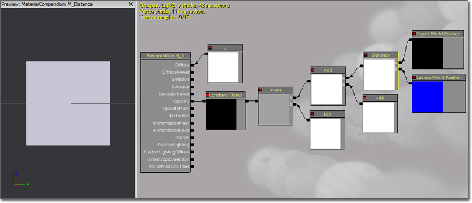
伪代码： Result = length(A - B) Low level HLSL code: float Result = sqrt(dot(A-B, A-B))Divide(除法)
Divide（除法）表达式会选取两个输入，然后输出第一个输入除以第二个输入的结果。 除法运算会根据通道进行，也就是说用第一个输入的 R 通道除以第二个输入的 R 通道，用第二个输入的 G 通道除以第二个输入的 G 通道等等。这两个输入必须有相同数量的值，除非除数是一个单独的浮点值。 输入- A - 选取要进行除法运算的值，即被除数。
- B - 选取要进行除法运算的值，即除数。
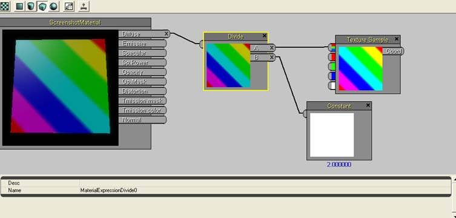
DotProduct(点积)
DotProduct 表达式可以计算点积或者一个向量投射到另一个向量上的长度。这个计算方法被很多技术用来计算衰减。 DotProduct 表达式要求两个向量输入具有同样数量的通道。 输入- A - 选取一个值或任意长度的向量。
- B - 选取一个值或任意长度的向量。
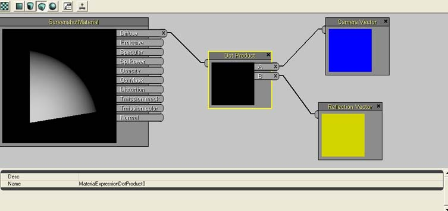
DynamicParameter(动态参数)
DynamicParameter 表达式可以为粒子发射器提供一个可以最多将四个值传递给材质以任何方式使用的管道。这些值通过Cascade中的发射器上的 ParameterDynamic(参数动态)模块进行设置。 属性- Param Names - 参数名称数列。这里的值将会确定在材质编辑器中显示在表达式输出上的文本，然后将会使用这个名字引用 Cascade 中的 ParameterDynamic 模块内的参数。
- Param1 - 输出 Param 名称属性中的第一个参数的值。这个输出的名称可以根据参数名称属性中的值进行更改。
- Param2 - 输出 Param 名称属性中的第二个参数的值。这个输出的名称可以根据参数名称属性中的值进行更改。
- Param3 - 输出 Param 名称属性中的第三个参数的值。这个输出的名称可以根据参数名称属性中的值进行更改。
- Param4 - 输出 Param 名称属性中的第四个参数的值。这个输出的名称可以根据参数名称属性中的值进行更改。
FlipBookSample(翻书采样)
FlipBookSample 表达式可以启用一个动画翻书贴图在材质中使用。它与TextureSample（贴图样本）非常相似，但是作为翻书贴图导入的贴图需要使用一个 FlipBookSample 表达式作为底层，FlipBookSample 会执行必需的 UV 操作渲染翻书贴图的子图像，基于翻书贴图的 HorizontalImage、VerticalImages 和 FrameRate 属性。 属性- Texture - 指定要使用的翻书贴图。
- UVs - 选取要应用到贴图上的贴图坐标。
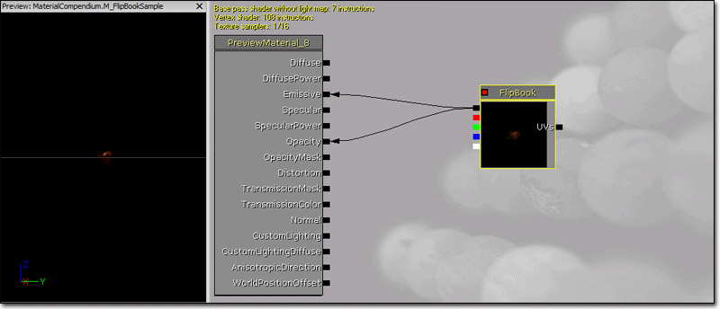
Floor(值下限取整)
Floor 表达式会选取值，然后将它们 向下 近似为上一个整数，然后输出这个结果。 还可以参阅Ceil(值上限取整)和Frac(取小数值)。 示例： 0.2 向下取整后的值为 0.0；(0.2,1.6) 向下取整后的值为 (0.0, 1.0)。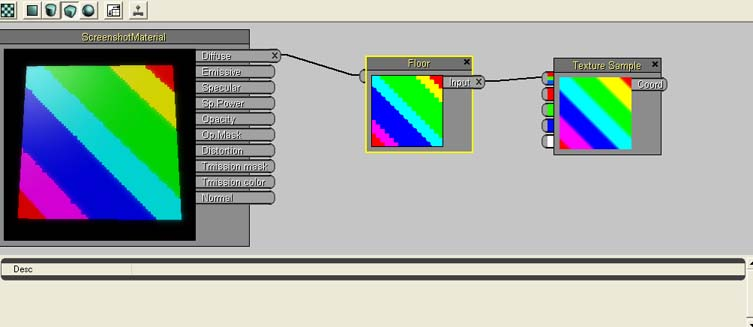
FluidNormal
FluidNormal 表达式会提供对 FluidSurfaceActor 生成的法线贴图的访问权限，其中包括由于对象与流体表面之间的动态交互而产生的波纹。它可以与其他法线贴图结合使用创建环境气流以及通过流体表面计算的交互性气流。
FMod
FMod 表达式可以返回这两个输入进行除法运算后的浮点余数。 (鼠标悬停在图片上查看动画效果)
FoliageNormalizedRotationAxisAndAngle
FoliageNormalizedRotationAxisAndAngle 表达式是为了和围绕坐标轴旋转节点结合使用而设计 ，当材质被应用到一个 InteractiveFoliageActor(交互的植被Actor)时，那个值是通过代码自动进行设置的。 为了应用弹簧偏置式，RGB 包含了要围绕其进行旋转的法线坐标轴。 Alpha 包含了应用弹簧偏置式所需要的旋转地角度和弧度。 请参阅InteractiveFoliageActor获取示例。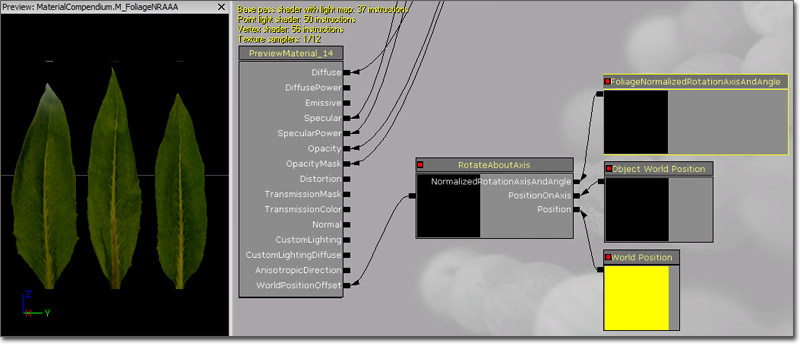
FoliageImpulseDirection(植被冲力的方向)
FoliageImpulseDirection 表达式的输出值是当应用材质到一个 InteractiveFoliageActor(交互的植被Actor)时通过代码自动设置的，它提供了对 InteractiveFoliageActor(交互的植被Actor)弹簧偏置式的原始访问权限。 请参阅InteractiveFoliageActor获取示例。
FontSampler(字体取样器)
FontSampler 表达式允许您从字体资源中采样出贴图页面作为正常的 2D 贴图。字体的 alpha 通道将包含字体的轮廓值。 仅允许指定有效的字体页面。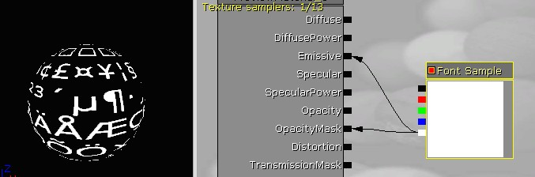
Frac(取小数值)
Frac 表达式可以选取值，然后输出这些值的小数部分。 还可以参阅Ceil（值上限取整）和Floor（值下限取整）. 示例： 0.2 的取小数值为 0.2；(0.0,1.6) 取小数值为 (0.0, 0.6)。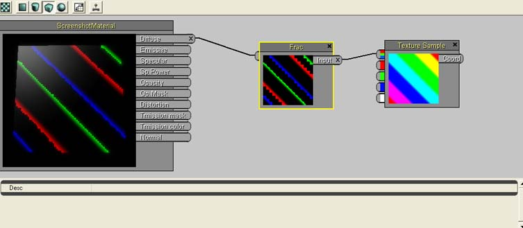
Fresnel(菲涅尔)
Fresnel 表达式可以根据表面法线的点积和相对相机的方向计算衰减。在表面法线直接指在相机上时，会输出一个为 0 的值。在表面法线与相机互相垂直的时候，会输出一个为 1 的值。最终的结果将会被限制为 [0,1]，这样在中心不会有任何彩色负片。 属性- Exponent - 指定输出值的衰减速度。值越大，衰减越紧凑越快。
- Normal - 选取代表表面法线的三维向量，通常是一个法线贴图。如果没有指定法线，那么会使用网格物体的切线法线。
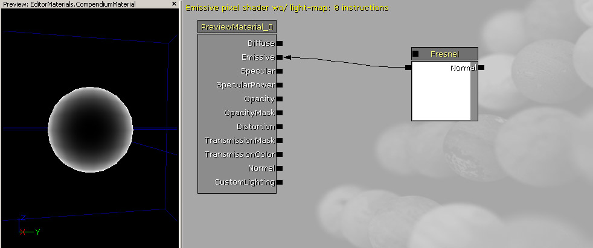
FunctionInput
FunctionInput 表达式只可以放置在材质函数中，在这里它定义了其中一个函数输入。 属性- Input Name - 输入的名称，将会显示在使用包含这个输入的材质函数的 MaterialFunctionCall 表达式上。
- Description - 有关这个输入的描述，当鼠标悬浮在 MaterialFunction Call 表达式上的这个输入的接口时显示为工具提示栏。
- Input Type - 这个输入预计的数据类型。传递给这个输入的数据将会被转换为这个类型，如果因为数据不兼容而导致转换失败那么将会报出编译器错误。
- Preview Value - 编辑包含这个输入的材质函数时要作为这个输入的预览使用的值。
- Use Preview Value As Default - 如果启用该项，那么在没有传递数据的情况下会将 Preview Value 作为这个输入的默认值使用。
- Sort Priority - 可以指定要在确定这些输入显示在 MaterialFunctionCall 表达式上的顺序时使用的输入优先级。
FunctionOutput
FunctionInput 表达式只可以放置在材质函数中，在这里它定义了其中一个函数输出。 属性- Input Name - 输出的名称，将会显示在使用包含这个输出的材质函数的 MaterialFunctionCall 表达式上。
- Description - 有关这个输出的描述，当鼠标悬浮在 MaterialFunction Call 表达式上的这个输出的接口时显示为工具提示栏。
- Sort Priority - 可以指定要在确定这些输出显示在 MaterialFunctionCall 表达式上的顺序时使用的输出优先级。
If
If 表达式可以比较两个输入，然后根据比较结果传递这三个其他输入值中的一个。要进行比较的两个输入必须是单浮点值。 输入- A - 选取一个单浮点值。
- B - 选取一个单浮点值。
- A>B - 选取这两个值，然后输出 A 的值是否大于 B 的值。
- A=B - 选取这两个值，然后输出 A 的值是否等于 B 的值。
- A<B - 选取这两个值，然后输出 A 的值是否小于 B 的值。
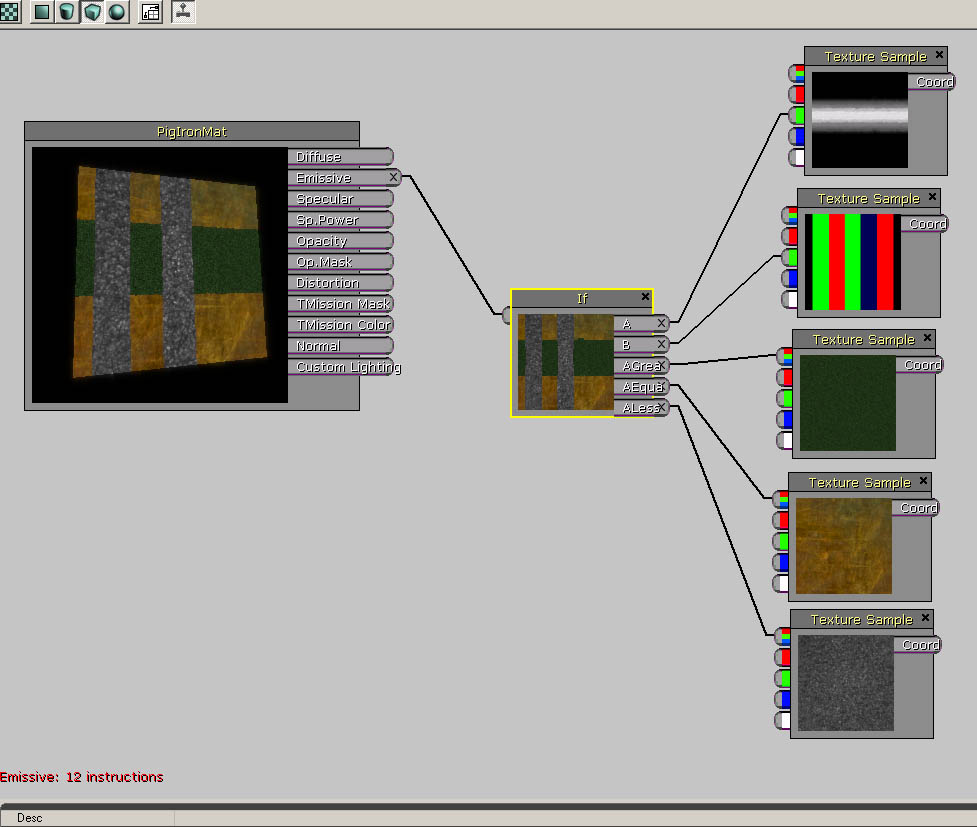
LensFlareIntensity(镜头眩光亮度)
LensFlareIntensity 表达式提供了正在渲染的镜头眩光的 'ConeStrength(椎体力度)'。这个椎体力度的提供可以决定关于和眩光的源相关的视点位置的眩光亮度。如果眩光的源放置在镜头眩光半径的外面，则锥角力度为 0.0。（如果镜头眩光的半径设置为 0.0f，那么它被认为永远处于打开状态）。如果眩光的源在半径里面，则锥角力度将设置为 1.0f。如果镜头眩光设置为定向锥角，如果视点放置在内锥角，并向眩光的方向看，则 ConeStrength(锥角力度)为 1.0f。当她移动到外锥角时，ConeStrength(锥角力度)将衰减为 0.0f。LensFlareOcclusion(镜头眩光遮挡)
LensFlareOcclusion 表达式提供了正在渲染的镜头眩光的遮挡值。这个值由图元覆盖百分比决定，这个百分比可以作为镜头眩光的 ScreenPercentageMap(屏幕覆盖百分比映射)的查找值。LensFlareRadialDistance(镜头眩光半径距离)
LensFlareRadialDistance 表达式提供了从屏幕中心渲染的元素的半径距离。这个值可以使用镜头眩光元素的 bNormalizeRadialDistance(正规化半径距离)属性使其正规化为 0.0f (中心) 到 1.0f (边缘)范围内的值。否则，这个值一般会在 0.0f (中心)到 1.0f (垂直或水平边缘) 到 1.4f (屏幕的角落)之内。1.4f 将是屏幕宽和高的比值。LensFlareRayDistance(镜头眩光光线距离)
LensFlareRayDistance 表达式提供了为正在渲染的眩光元素设置的光线距离。LensFlareSourceDistance(镜头眩光源距离)
LensFlareSourceDistance 表达式提供了正在被渲染的元素和在屏幕空间中的源的距离。LightmapUV（光照贴图 UV）
LightmapUV 表达式以二维向量值的形式输出了光照贴图 UV 贴图坐标。如果光照贴图 UV 不可用，那么它会输出一个二维向量值 (0,0)。LightmassReplace（Lightmass 替换）
当为了达到正常渲染目的而编译材质时，LightmassReplace 表达式只是简单地通过 Realtime(实时)节点的输入端，当到处材质到 Lightmass 来获得全局渲染时，该节点则通过 Lightmass 的输入端。 这对于解决那些导出版本不能正确地进行处理的材质表达式是有用的，比如 WorldPosition。 输入- Realtime - 选取要传递进行法线渲染的值。
- Lightmass - 选取在将材质导出到 Lightmass 时要传递的值。
LightVector(光照向量)
LightVector 表达式是一个具有3个通道的向量值，代表着光照相对于表面的方向。 示例应用： LightVector 可以用于计算自定义光照算法，例如，一个简单的 Lambert 光照模型。
LinearInterpolate(线性插值)
LinearInterpolate 表达式可以在将第三个值作为一个蒙板的基础上在两个输入值之间进行混合。LinearInterpolate(线性插值)可以被认为是一个用于定义在两个贴图间过渡的蒙板，和 Photoshop 中的层蒙板类似。 蒙板 Alpha 的亮度决定了从这两个输入值中取得颜色的比率。 如果 Alpha 是 1.0/白色，那么使用第一个输入值。 如果 Alpha 是 0.0/黑色，那么使用第二个输入值。 如果 Alpha 是灰色的(值在 0 和 1 之间)， 则输出会在这两个输入值之间混合。请记住混合是基于每个通道进行的。 所以，如果 Alpha 通道是一个RGB颜色，Alpha 的红色通道值定义了 A 和 B 的红色通道的混合，它和 Alpha 的绿色通道是 独立的 ，绿色通道定义了 A 和 B 通道间的绿色通道的混合。 输入- A - 选取映射为白色的值。
- A - 选取映射为黑色的值。
- Alpha - 选取这个值作为蒙板 alpha。
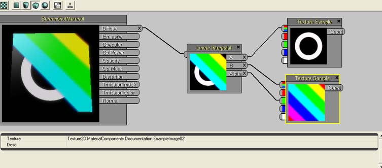
MaterialFunctionCall
MaterialFuntionCall 表达式允许您通过其他材质或函数使用外部 材质函数。外部函数的输入和输出节点会变为这个函数调用节点的输入和输出。如果在放置其中某一个表达式时在内容浏览器中选中了一个 MaterialFunction，那么会自动对它进行赋值。 快捷方式： F + 鼠标左键点击 属性- Material Function - 指定要使用的材质函数。
MeshEmitterDynamicParameter
MeshEmitterDynamicParameter 表达式与标准动态参数一样，只是在材质与 Cascade 中的网格物体发射器结合使用时必须使用它。它可以同样提供四个输出将值由 Cascade 传递到材质。MeshEmitterVertexColor(网格物体发射器顶点颜色)
MeshEmitterVertexColor 表达式是影响网格物体粒子发射器的颜色模块输出结果的材质的入口点。 每个由网格物体发射器发射的作为粒子渲染的网格物体都有相应的颜色—这就是那个颜色。 输出- RGB - 输出颜色的三维 RGB 向量值。
- R - 输出颜色的红色通道。
- G - 输出颜色的绿色通道。
- B - 输出颜色的蓝色通道。
- A - 输出颜色的 alpha 通道。
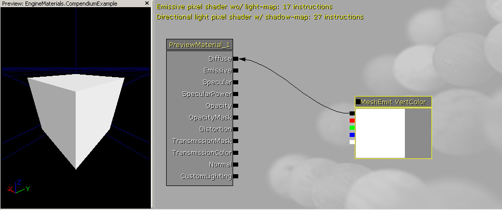
MeshSubUV(网格物体子UV)
MeshSubUV 表达式与标准粒子子 UV一样，只是在材质与 Cascade 中的网格物体发射器结合使用时必须使用它。它提供了相同的功能，可以显示应用到这个表达式的贴图中的子图像，但是它不具有在子图像之间进行混合的功能。需要使用这个表达式代替标准的 ParticleSubUV，这样可以避免在每一帧为网格物体的贴图坐标重新打包贴图。 属性- Texture - 指定要使用的贴图。
- UVs - 被忽略的 UV 输入，不起任何作用。
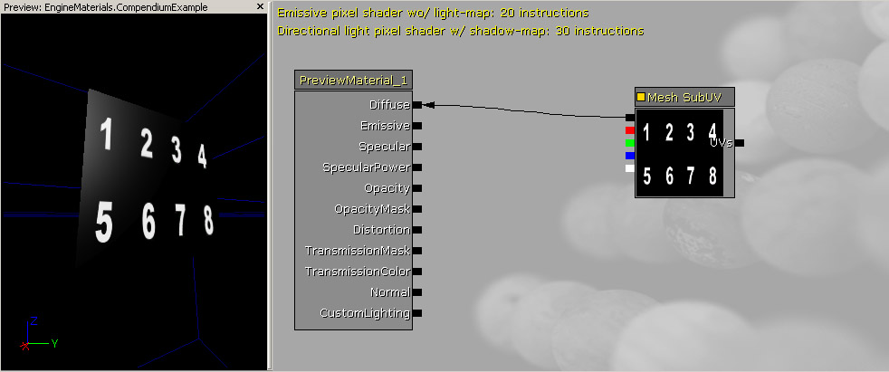
MeshSubUVBlend
MeshSubUVBlend 表达式与MeshSubUV一样，只是它在 Cascade 中使用线性混合或随机混合模式的时候提供了在子图像之间进行混合的功能。 属性- Texture - 指定要使用的贴图。
- UVs - 被忽略的 UV 输入，不起任何作用。
Multiply(乘法)
Multiply 表达式会选取两个输入，将它们相乘，然后输出这个结果。于 Photoshop 的乘法图层混合相似。 乘法运算会根据通道进行，也就是说用第一个输入的 R 通道乘以第二个输入的 R 通道，用第二个输入的 G 通道乘以第二个输入的 G 通道等等。这两个输入必须有相同数量的值，除非其中一个值是一个单浮点值。 输入- A - 选取要进行乘法运算的第一个值。
- B - 选取第二个要进行乘法运算的值。
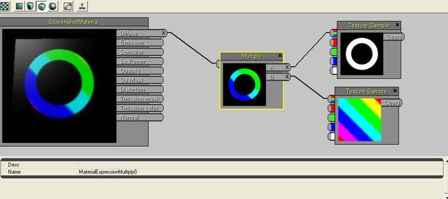
Normalize(单位化)
Normalize 表达式可以计算并输出它的输入的单位化值。也就是说这个输入的每个分量都会除以向量的 L-2 单位化（长度）。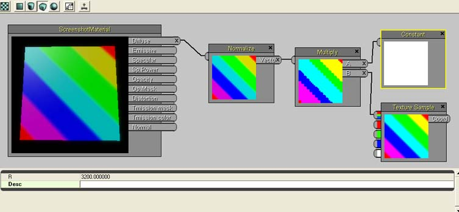
ObjectOrientation（物体朝向）
ObjectOrientation 表达式可以输出物体的世界空间向上向量。换句话说，，它是应用材质的物体的本地 Z 轴正方向所指向的方向。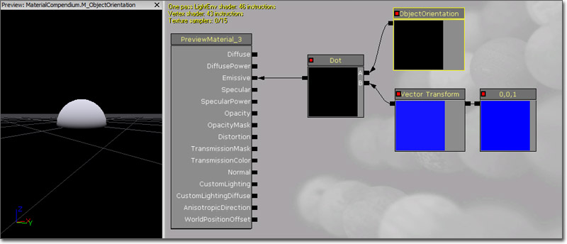
ObjectRadius(物体半径)
ObjectRadius 表达式输出了物体边界框的世界空间半径。 您可以通过启用活动视口中的 'show bounds(显示边界框)' 视图模式来预览任何对象的包围框（在视口顶部的向下的按钮下面），然后选择一个对象。 请参照 ObjectWorldPosition 作为示例。ObjectWorldPosition(物体在世界空间中的位置)
ObjectWorldPosition 表达式输出了物体边界框的世界空间中心位置。 这对于为植被创建球状光照诸如此类是有用的。 下面的节点设置使用物体位置、世界空间位置和物体半径来制作一个梯度，这个梯度物体位置的值为 1，物体半径值为 0。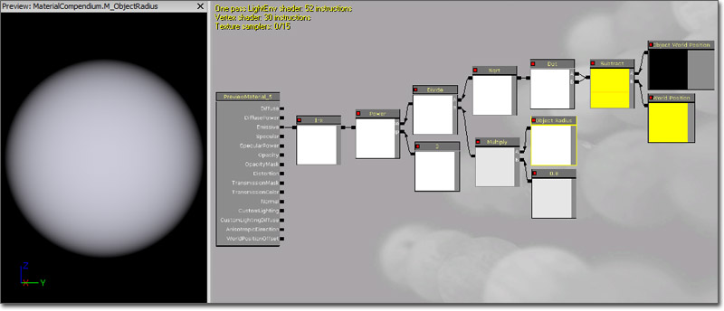
OcclusionPercentage（遮挡百分比）
OcclusionPercentage 表达式输出了所渲染的物体的遮挡百分比。 仅供 ParticleSystem（它具有 OcclusionBoundMethod 而不是 None）和 LensFlares 使用。OneMinus(一减去)
OneMinus 表达式选取一个输入值，然后输出结果为 1 减去那个输入值。该运算按照每个通道进行。 示例： OneMinus(一减去) 0.4 的结果为 0.6；OneMinus(一减去) (0.2,0.5,1.0) 的结果为 (0.8,0.5,0.0)。 实例应用： 当输入颜色在范围 [0,1] 内时，OneMinus(一减去)表达式的效果和一般所称的"invert(反相)"类似--那也就是，OneMinus(一减去)返回互补色，即返回的颜色和输入端的颜色相加将产生白色。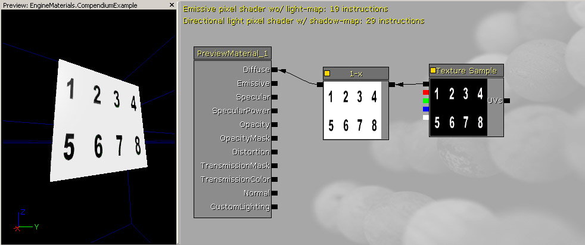
Panner(平移器)
Panner 表达式输出了可以用于创建平移或运动贴图的 UV 贴图坐标。 属性- SpeedX - 指定要平移 U 方向坐标的速度。
- SpeedX - 指定要平移 U 方向坐标的速度。
- Coordinate - 选取表达式以后可以修改的基础 UV 贴图坐标。
- Time - 选取可以用于确定当前平移位置的值。它通常是一个Time（时间）表达式，可以提供一个常量平移效果，但是也可以使用Constant（常量）或ScalarParameter（标量参数）设置一个特定的偏移或通过 Matinee 或 UnrealScript 控制平移。
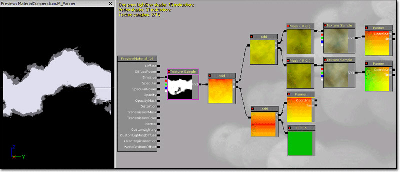
ParticleMacroUV(粒子的巨大UV)
ParticleMacroUV 表达式可以输出一个用于以连续的方式映射任何 2d 贴图到整个粒子系统中的 UV 贴图坐标，意味着贴图在所有粒子上无缝地平铺。 UV 将以 MacroUVPosition（在粒子系统中的 Cascade 内制定，在 MacroUV 类别下）为中心，MacroUVRadius 决定了 UV 平铺时的世界空间半径。 ParticleMacroUV 节点对于在粒子上映射连续的噪音来打断通过使用法线坐标来影射贴图到每个粒子上所产生的模式是有用的。 属性- Use View Space - 如果该项为 true，它可以有效地基于每个平面例子的深度来偏移坐标，并创建一种位移效果，这对赋予爆炸一个模糊地放射光线外观是有用的。
 (鼠标悬停在图片上查看动画效果)
(鼠标悬停在图片上查看动画效果)
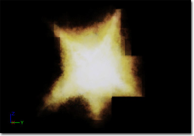
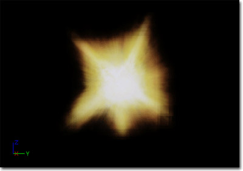
ParticleSubUV(粒子子 UV)
ParticleSubUV 表达式可以用于渲染贴图的子图像到粒子上。 ParticleSubUV(粒子子UV) 和 flipbook (翻书) 类似，除了 ParticleSubUV(粒子子UV) 允许在Cascade中操作贴图动画。 属性- Texture - 指定要使用的贴图。
- UVs - 被忽略的 UV 输入，不起任何作用。
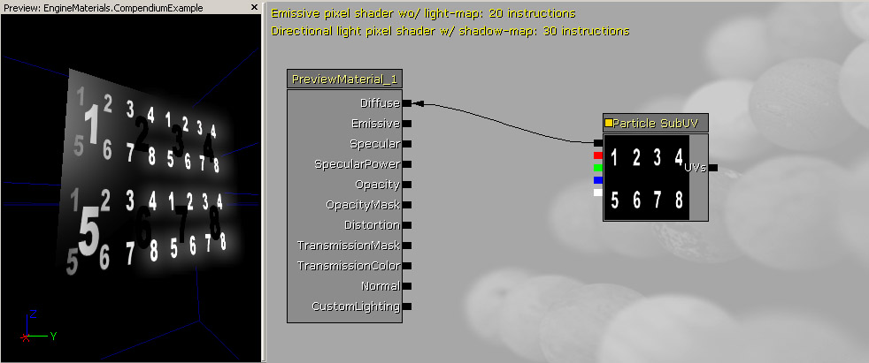
PerInstanceRandom
PerInstanceRandom 表达式可以根据静态网格物体实例将不同的随机浮点值输出给应用这个材质的物体。InstancedStaticMeshComponent 可以为实例设置一个随机的浮点值，这个值是公开的，这样就可以在您需要的时候使用它（例如，在窗户后面的随机光源级别）。它是个常量，但是对于每个网格物体实例而言有所不同。 输出值将会是一个在 0 和目标平台的 RAND_MAX 之间的整数。 注意： 它只在应用到 InstancedStaticMesh Actor 或其他采用 InstancedStaticMeshComponents 的 Actor 的时候起作用，例如，ProcBuilding。PixelDepth(像素深度)
PixelDepth 表达式输出了当前进行渲染的像素的深度或者与相机之间的距离。 关于使用这个值的更多详情，请查看DestDepth(目标深度)。Power(求幂值)
Power 表达式会选取两个输入值，将 Base（基值）增加到 Exp 幂值，然后输出这个结果；换句话说，Base（基值）乘以它自己的 Exp 倍数。 输入- Base - 选取基值。
- Exp - 选取指数幂值。
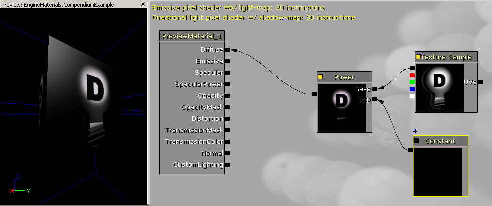
ReflectionVector(反射向量)
ReflectionVector 表达式实质上与CameraVector（相机向量）的原理相似，但是它会输出代表通过表面法线反射的相机方向的三维向量值。 实例应用： ReflectionVector(反射向量)一般用于环境贴图，在那里反射向量的 x/y 分量被用作为立方体贴图的 UV 坐标。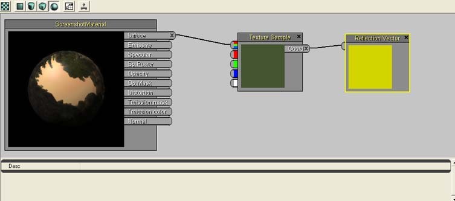
Rotator(旋转器)
Rotator 表达式以二维向量值的形式输出了 UV 贴图坐标，它可以用于创建旋转的贴图。 属性- CenterX - 指定要作为旋转的中心使用的 U 坐标。
- CenterY - 指定要作为旋转的中心使用的 V 坐标。
- Speed - 指定顺时针旋转坐标的速度。
- Coordinate - 选取表达式以后可以修改的基础 UV 贴图坐标。
- Time - 选取可以用于确定当前旋转位置的值。它通常是一个Time（时间）表达式，可以提供一个常量旋转效果，但是也可以使用Constant（常量）或ScalarParameter（标量参数）设置一个特定的偏移或通过 Matinee 或 UnrealScript 控制旋转。
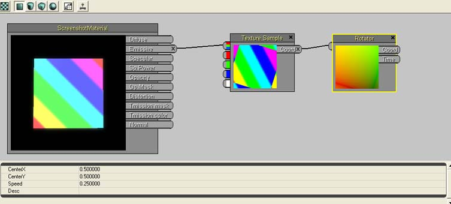
RotateAboutAxis(围绕坐标轴旋转)
RotateAboutAxis 表达式在已知旋转坐标轴、坐标轴上的一个点、及旋转角度的情况下旋转一个三维向量输入值。 它对于比简单的剪辑产生更好质量的使用WorldPositionOffset(世界位置偏移)的动画是有用的。 请参阅InteractiveFoliageActor获取示例。 输入- NormalizedRotationAxisAndAngle - 选取FoliageNormalizedRotationAxisAndAngle（植被的法线旋转轴及角度）表达式的输出值。
- PositionOnAxis - 选取代表要发生旋转的轴上的位置的三维向量。
- Position - 选取代表对象的位置的三维向量。
ScalarParameter(标量参数)
ScalarParameter 表达式输出了一个单浮点值（Constant（常量）），可以在材质的实例中或快速通过代码进行访问和更改。 属性- Default Value - 指定常量可以接受的初始值。
- Param Name - 指定用于识别材质实例中的参数或通过代码识别参数的名称。
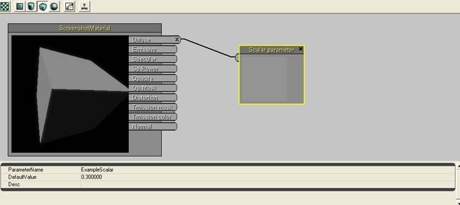
SceneDepth(场景深度)
SceneDepth 表达式可以输出现有场景深度。 它与DestDepth（目标深度）相似，只是 DestDepth 只可以在当前描画的像素上对深度进行取样，而 SceneDepth 可以在 任何位置 对深度取样。 属性- Normalize - 如果该项为 true，那么规定深度输出的范围为 [0,1]。
- UVs - 选取用于确定如何取样深度“贴图”的 UV 贴图坐标。

 编程人员： SceneDepth 返回一个粗略的深度值（0 到 2^24-1 之间的整数）。 这非线性的深度可以按照以下方式进行单位化处理：
编程人员： SceneDepth 返回一个粗略的深度值（0 到 2^24-1 之间的整数）。 这非线性的深度可以按照以下方式进行单位化处理：
MaxZ = 16777215 NormalizedDepth = 1 - MaxZ / (SceneDepth + MaxZ)最终的单位化后的深度是 0.0 到 1.0 范围内的线性值。
SceneTexture(场景贴图)
SceneTexture 表达式可以输出现有场景颜色。 它与DestColor（目标颜色）相似，只是 DestColor 只可以在当前描画的像素上对颜色进行取样，而 SceneTexture 可以在 任何位置 对颜色取样。 属性- Scene Texture Type（场景贴图类型） -
- Screen Align - 如果该项为 true，那么将 [0,1] UV 贴图坐标映射为返回缓冲的当前大小；换句话说，将场景贴图一对一地映射到场景。
- UVs - 选取用于确定如何取样场景贴图的 UV 贴图坐标。
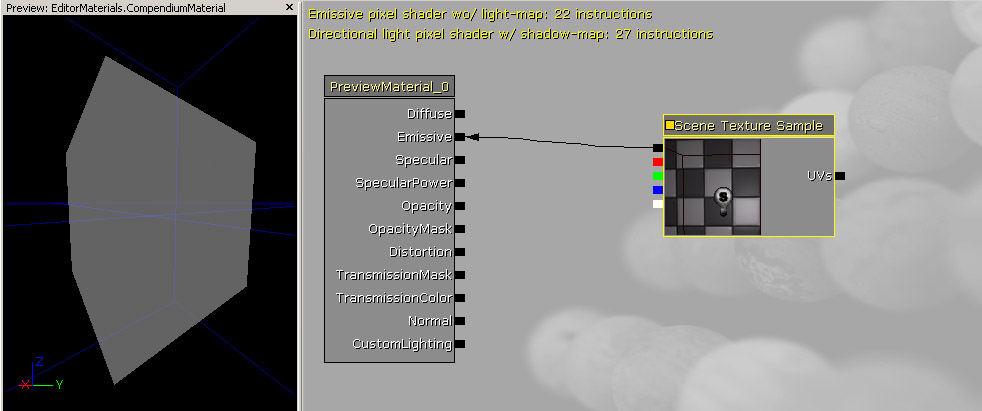
ScreenPosition(屏幕位置)
ScreenPosition 表达式可以输出当前进行渲染的像素的屏幕空间位置。 属性- Screen Align - 如果该项为 true，那么为了进行屏幕对齐，ScreenPosition(屏幕位置)使用均匀的坐标来划分位置，并把位置映射到范围 [0.0,-1]-[1,1]。
Sine(正弦)
Sine 表达式可以输出输入值（以弧度为单位）的正弦函数。最普遍的是，通过将一个 Time 表达式连接到它的输入端可以输出一个连续震荡的波形。输出值将在 -1 到 1 之间来回循环。它与Cosine表达式的输出不同之处在于它的输出波形偏移了半个周期。这个波的视觉表现如下所示： 属性- Period - 指定合成波的周期。换句话说，这就是发生一次震荡的时间长度。

SphereMask（球形蒙板）
SphereMask 表达式输出了一个根据距离计算的蒙板值。如果一个输入时一个点的位置，而另一个输入时半径为某个值的球体的中心，那么外部的蒙板值为 0 而内部蒙板值为 1，其中包括一些过渡区域。它在一个、两个、三个和四个分向量上都起作用。 属性- Attenuation Radius - 指定要用于距离计算的半径。
- Hardness Percent - 指定过渡区域大小。它的工作原理与 Photoshop 画刷硬度值类似。0 代表这个过渡是硬的，100 代表过渡区域最大（软）。
- A - 选取代表要检查的点的位置的值。
- B - 选取代表球体中心的值。
SquareRoot(平方根)
SquareRoot 表达式可以输出输入值的平方值。 SquareRoot(平方根)仅能在一个单浮点输入值上使用。挖空
Subtract 节点会选取两个输入，然后从第一个输入中将第二个输入挖除，然后输出剩下的部分。 减法运算会根据通道进行，也就是说用第一个输入的 R 通道减去第二个输入的 R 通道，用第二个输入的 G 通道减去第二个输入的 G 通道等等。这两个输入必须有相同数量的通道，除非第二个输入是一个单独的常量值。可以从一个具有任意个输入的向量中减去常量。 输入- A - 选取要进行减法运算的值。
- B - 选取被减的值。
StaticBool
使用 StaticBool 表达式为函数中的静态布尔变量函数输入提供一个默认布尔变量值。该节点不会在任何输入之间切换，所以必须将它与一个 StaticSwitch 节点结合起来使用。 属性- Value - 这个布尔变量的值，TRUE（勾选）或 False。
StaticBoolParameter
StaticBoolParameter 的工作方式与 StaticSwitchParameter 十分相似，只是它只会创建一个布尔变量而不会进行开关切换。 属性- Default Value - 这个参数的默认布尔值，TRUE（勾选）或 False。
StaticComponentMaskParameter(静态分量蒙板参数)
StaticComponentMaskParameter 和普通的 Component Mask(分量蒙板)的表现行为类似，除了蒙板的值可以通过实例进行设置。 它是静态的，因为它在运行的时候无法更改，它只可以在Material Instance Editor（材质实例编辑器）中进行设置。 Static Component Masks(静态分量蒙板)是在编译时应用的，而不是在运行时。 对于每个 使用了 静态参数的材质都必须编译出一个新版本的材质，如果乱用，这将会导致着色器爆炸。 请尝试最小化材质中静态参数及真正使用的这些静态参数排列的数量。 属性- Default R - 如果勾选该项，输入值的红色或者第一个通道将会被传递到输出。
- Default G - 如果勾选该项，输入值的绿色或者第二个通道将会被传递到输出。
- Default B - 如果勾���该项，输入值的蓝色或者第三个通道将会被传递到输出。
- Default A - 如果勾选该项，输入值的 alpha 或者第四个通道将会被传递到输出。
- Parameter Name - 指定用于识别材质实例中的参数和通过代码识别参数的名称。
StaticSwitchParameter（静态开关参数）
StaticSwitchParameter 表达式可以选取两个输入，然后在第一个参数值为 true 的情况下输出第一个参数，否则输出第二个参数。 这个参数被命名为静态的，因为它在运行的时候无法更改，它只可以在Material Instance Editor（材质实例编辑器）中进行设置。 Static Switches(静态开关)是在编译时应用的，而不是运行时应用。 这意味着无论材质的哪个分支丢失都不会被执行，所以 Static Switches(静态开关)在运行时是完全释放的。 另一方面，对于每个 使用了 静态参数的材质都必须编译出一个新版本的材质，如果乱用，这将会导致着色器爆炸。 请尝试最小化材质中静态参数及真正使用的这些静态参数排列的数量。 属性- Default Value - 如果该项为 true，会输出第一个输入。否则，输出第二个输入。
- Extended Caption Display - 如果该项为 true，那么该表达式的标题栏会显示这个表达式的值。
- Parameter Name - 指定用于识别材质实例中的参数和通过代码识别参数的名称。
- A - 选取任意一个通道数值。
- B - 选取任意一个通道数值。


StaticSwitch
StaticSwitch 表达式的工作方式与 StaticSwitchParameter 十分相似，只是它只进行开关切换而不会创建一个参数。 属性- Default Value - 这个可以确定激活哪一个输入的参数的默认布尔值，True（勾选）或 False。
- True - 当开关的 Value 为 True 时使用的输入。
- False - 当开关的 Value 为 False 时使用的输入。
- Value - 可以引入一个确定哪一个输入处于激活状态的布尔变量值。
TextureCoordinate(贴图坐标)
TextureCoordinate 表达式会以二维向量值的形式输出 UV 贴图坐标，允许材质使用不同的 UV 通道，指定平铺显示，然后使用其他方法在网格物体的 UV 上进行操作。 属性- Coordinate Index - 指定要使用的 UV 通道。
- UTiling - 指定在 U 方向平铺显示的量。
- VTiling - 指定在 V 方向平铺显示的量。
- Un Mirror U - 如果该项为 true，那么取消在 U 方向的所有镜像。
- Un Mirror V - 如果该项为 true，那么取消在 V 方向的所有镜像。
TextureSample(贴图样本)
TextureSample 表达式会输出贴图中的颜色值。这个贴图可以是一个规则的 Texture2D（其中包括法线贴图），或者一个动画贴图。 属性- Texture - 指定供表达式取样的贴图。要设置这个贴图，首先在内容浏览器中选择一个贴图。 然后，在表达式的属性窗口中选择 Texture(贴图)属性并点击 '应用当前选项' 按钮。
- UVs - 选取要用于贴图上的 UV 贴图坐标。如果没有向 UV 输入值，那么使用应用了这个材质的网格物体的贴图坐标。如果 TextureSample(贴图样本)代表一个立方体贴图，则 UV 坐标必须是一个具有三个通道的值，而不是两个通道的值。
- RGB - 输出颜色的三维 RGB 向量值。
- R - 输出颜色的红色通道。
- G - 输出颜色的绿色通道。
- B - 输出颜色的蓝色通道。
- A - 输出颜色的 alpha 通道。如果贴图不包含 alpha 通道时，把 'alpha' 通道连接到一些东西，这在技术上是允许的，但是这将总会导致 0(黑色)。
TextureSampleParameter2D(贴图样本参数：2D)
TextureSampleParameter2D 表达式与 TextureSample 一样，只是它是一个可以在材质实例中通过代码修改的参数。 属性- Parameter Name - 指定用于识别材质实例中的参数和通过代码识别参数的名称。
- Texture - 指定供表达式取样的贴图。
- UVs - 选取要用于贴图上的 UV 贴图坐标。如果没有向 UV 输入值，那么使用应用了这个材质的网格物体的贴图坐标。
- RGB - 输出颜色的三维 RGB 向量值。
- R - 输出颜色的红色通道。
- G - 输出颜色的绿色通道。
- B - 输出颜色的蓝色通道。
- A - 输出颜色的 alpha 通道。如果贴图不包含 alpha 通道时，把 'alpha' 通道连接到一些东西，这在技术上是允许的，但是这将总会导致 0(黑色)。
TextureSampleParameterCube(贴图样本参数:立方体)
TextureSampleParameterCube 表达式与 TextureSample 一样，只是它只接受立方体贴图，同时它也是一个可以在材质实例中通过代码修改的参数。 属性- Parameter Name - 指定用于识别材质实例中的参数和通过代码识别参数的名称。
- Texture - 指定供表达式取样的立方体贴图。
- UVs - 选取要用于贴图上的 UV 贴图坐标。如果没有向 UV 输入值，那么使用应用了这个材质的网格物体的贴图坐标。它必须是一个三维向量值。
- RGB - 输出颜色的三维 RGB 向量值。
- R - 输出颜色的红色通道。
- G - 输出颜色的绿色通道。
- B - 输出颜色的蓝色通道。
- A - 输出颜色的 alpha 通道。如果贴图不包含 alpha 通道时，把 'alpha' 通道连接到一些东西，这在技术上是允许的，但是这将总会导致 0(黑色)。
TextureObject
TextureObject 表达式可以为函数内的贴图函数输入提供一个默认贴图。该节点实际上没有对这个贴图进行采样，所以必须将它与一个 TextureSample 节点结合在一起使用。TextureObjectParameter（贴图对象参数）
TextureObjectParameter 表达式可以定义一个贴图参数并输出这个贴图对象，在调用一个其中含有贴图输入的函数的材质中使用。该节点实际上没有对这个贴图进行采样，所以必须将它与一个 TextureSample 节点结合在一起使用。 这个节点可以与材质函数结合在一起使用。TextureSampleParameterMeshSubUV（贴图样本参数网格物体子 UV）
TextureSampleParameterMeshSubUV 表达式与 MeshSubUV 一样，只是它是一个可以在材质实例中通过代码修改的参数。 属性- Parameter Name - 指定用于识别材质实例中的参数和通过代码识别参数的名称。
- Texture - 指定供表达式取样的贴图。
- UVs - 被忽略的 UV 输入，不起任何作用。
- RGB - 输出颜色的三维 RGB 向量值。
- R - 输出颜色的红色通道。
- G - 输出颜色的绿色通道。
- B - 输出颜色的蓝色通道。
- A - 输出颜色的 alpha 通道。如果贴图不包含 alpha 通道时，把 'alpha' 通道连接到一些东西，这在技术上是允许的，但是这将总会导致 0(黑色)。
TextureSampleParameterMeshSubUVBlend（贴图样本参数网格物体子 UV 混合）
TextureSampleParameterMeshSubUVBlend 表达式与TextureSampleParameterMeshSubUV一样，只是它在 Cascade 中使用线性混合或随机混合模式的时候提供了在子图像之间进行混合的功能。 属性- Parameter Name - 指定用于识别材质实例中的参数和通过代码识别参数的名称。
- Texture - 指定供表达式取样的贴图。
- UVs - 被忽略的 UV 输入，不起任何作用。
- RGB - 输出颜色的三维 RGB 向量值。
- R - 输出颜色的红色通道。
- G - 输出颜色的绿色通道。
- B - 输出颜色的蓝色通道。
- A - 输出颜色的 alpha 通道。如果贴图不包含 alpha 通道时，把 'alpha' 通道连接到一些东西，这在技术上是允许的，但是这将总会导致 0(黑色)。
TextureSampleParameterMovie(贴图样本参数：影片)
TextureSampleParameterMovie 表达式与 TextureSample 一样，只是它只接受视频贴图（Bink 视频），同时它也是一个可以在材质实例中通过代码修改的参数。 属性- Parameter Name - 指定用于识别材质实例中的参数和通过代码识别参数的名称。
- Texture - 指定供表达式取样的视频贴图。
- UVs - 选取要用于贴图上的 UV 贴图坐标。如果没有向 UV 输入值，那么使用应用了这个材质的网格物体的贴图坐标。
- RGB - 输出颜色的三维 RGB 向量值。
- R - 输出颜色的红色通道。
- G - 输出颜色的绿色通道。
- B - 输出颜色的蓝色通道。
- A - 输出颜色的 alpha 通道。如果贴图不包含 alpha 通道时，把 'alpha' 通道连接到一些东西，这在技术上是允许的，但是这将总会导致 0(黑色)。
TextureSampleParameterNormal（贴图样本参数：法线）
TextureSampleParameterNormal 表达式与 TextureSample 一样，但是特别适合与法线贴图结合使用，而且它是一个可以在材质实例中通过代码进行修改的参数。请参阅法线贴图格式文档了解有关为什么在指定一个用于法线贴图的参数时这个代码更适用于 TextureSampleParameter2D 的说明。 属性- Parameter Name - 指定用于识别材质实例中的参数和通过代码识别参数的名称。
- Texture - 指定供表达式取样的法线贴图。
- UVs - 选取要用于贴图上的 UV 贴图坐标。如果没有向 UV 输入值，那么使用应用了这个材质的网格物体的贴图坐标。
- RGB - 输出颜色的三维 RGB 向量值。
- R - 输出颜色的红色通道。
- G - 输出颜色的绿色通道。
- B - 输出颜色的蓝色通道。
- A - 输出颜色的 alpha 通道。如果贴图不包含 alpha 通道时，把 'alpha' 通道连接到一些东西，这在技术上是允许的，但是这将总会导致 0(黑色)。
TextureSampleParameterSubUV（贴图样本参数：子 UV）
TextureSampleParameterSubUV 表达式与 MeshSubUV 一样，只是它是一个可以在材质实例中通过代码修改的参数。 属性- Parameter Name - 指定用于识别材质实例中的参数和通过代码识别参数的名称。
- Texture - 指定供表达式取样的贴图。
- UVs - 被忽略的 UV 输入，不起任何作用。
- RGB - 输出颜色的三维 RGB 向量值。
- R - 输出颜色的红色通道。
- G - 输出颜色的绿色通道。
- B - 输出颜色的蓝色通道。
- A - 输出颜色的 alpha 通道。如果贴图不包含 alpha 通道时，把 'alpha' 通道连接到一些东西，这在技术上是允许的，但是这将总会导致 0(黑色)。
Time(时间)
Time(时间)节点用于为材质添加时间过程，比如一个平移器、[[#Cosine][Cosine](余弦)]或其它的依赖于时间的旋转操作。 属性- Ignore Pause - 如果该项为 true，那么即使游戏被暂停，时间还是会继续运行。
Transform(变换)
Transform 表达式可以将一个三维向量值从一个引用坐标系统变换为另一个。 默认情况下，材质中所有的着色器的计算都是在切线空间进行的。 向量常数、相机向量、光照向量等等在被应用到材质之前都会被变换为切线空间。Transform 表达式允许这些向量从切线空间变换为世界空间、本地空间或视图空间坐标系统。此外，它还允许将世界空间和本地空间向量变换为任意其他引用坐标系统。 属性- Transform Source Type - 指定要变换为这个向量的当前坐标系统。它可以是： 世界、本地或切线。
- Transform Type - 指定向量要变换为的切线坐标系统。它可以是： 世界、视图、本地或切线。
 为了在法线贴图上使用这种效果，简单地使用法线贴图来替换 Constant3Vector(3维常数向量)即可。
这里是一个应用到像水滴样的岩石网格物体上的球体贴图材质的例子：
为了在法线贴图上使用这种效果，简单地使用法线贴图来替换 Constant3Vector(3维常数向量)即可。
这里是一个应用到像水滴样的岩石网格物体上的球体贴图材质的例子：
TransformPosition(变换位置)
当这个节点用于使世界坐标从原点远离时会出现的精度问题，所以不建议使用这个节点！请使用 WorldPosition 作为替换。 TransformPosition(变换位置)节点可以把任何位置从屏幕空间转换为在表达式的 TransformType(变换类型)变量中所指定的目标空间。 目前仅支持转换为世界空间。 这个表达式可以用于获得材质的世界空间坐标。 为了可视化世界位置，您可以把它直接插入到自发光中： 您也可以使用世界位置作为平面的贴图坐标：TwoSidedSign（双面符号）
TwoSidedSign 表达式可以用于翻动双面自定义光照材质的反面上的法线，使其可以与 Phong 的功能匹配。+1 代表双面材质的正面，-1 代表双面材质的反面。
WorldPosition(世界位置)
WorldPosition(世界位置)表达式可以输出当前像素在世界空间中的位置。为了可视化它，可以简单地把它的输出连接到 Emissive(自发光)端： 一般应用是查找从相机到像素间的径向距离（与来自 PixelDepth(像素深度)的正交距离相对）。WorldPosition(世界位置)对于用作为贴图坐标并使无关的使用贴图坐标的网格物体在彼此相互靠近时进行调和是有用的。 这里是把 WorldPosition.xy 应用到平面贴图的一个基本实例：WorldNormal(世界法线)
WorldNormal 表达式会输出世界空间顶点法线。它只用于在顶点着色器中执行的材质输出端，和[[WorldPositionOffset] [WorldPositionOffset(世界位置偏移)]]类似。 这对于是一个网格物体增高或者收缩是有用的。 注意沿着法线的偏移位置将会导致几何体沿着 UV 接缝分离开。 (鼠标悬停在图片上查看动画效果)
VectorParameter(向量参数)
VectorParameter 表达式与 Constant4Vector 一样，只是它是一个可以在材质实例中通过代码修改的参数。VectorParameter 一个微妙的好处是它的值可以使用Color picker（颜色拾取器）进行设置。 属性- 默认值
- R - 制定表达式输出的向量的红色或第一个通道的浮点值。
- G - 指定表达式输出的向量的绿色或第二个通道的浮点值。
- B - 指定表达式输出的向量的蓝色或第三个通道的浮点值。
- A - 指定表达式输出的向量的 alpha 或第四个通道的浮点值。
- Parameter Name - 指定用于识别材质实例中的参数和通过代码识别参数的名称。
VertexColor(顶点颜色)
VertexColor 表达式是影响平面实例粒子发射器的颜色模块输出结果的材质的入口点。 输出- RGB - 输出颜色的三维 RGB 向量值。
- R - 输出颜色的红色通道。
- G - 输出颜色的绿色通道。
- B - 输出颜色的蓝色通道。
- A - 输出颜色的 alpha 通道。